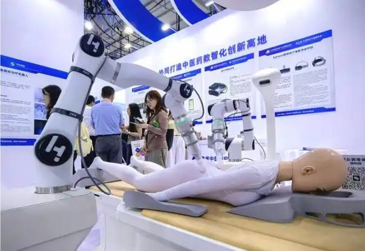
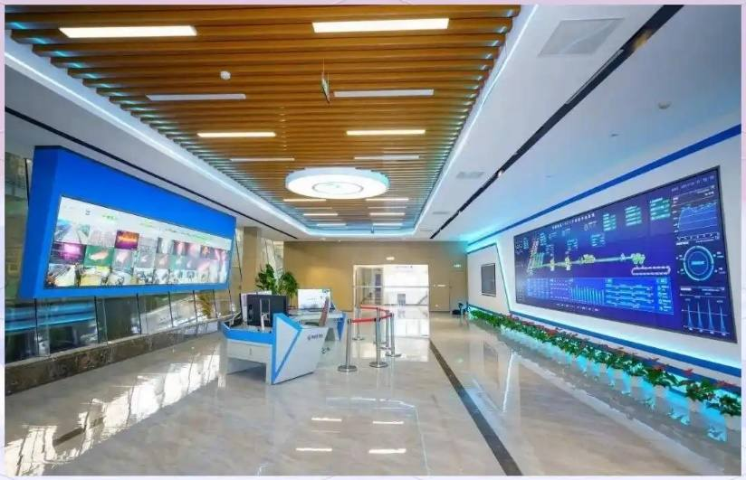
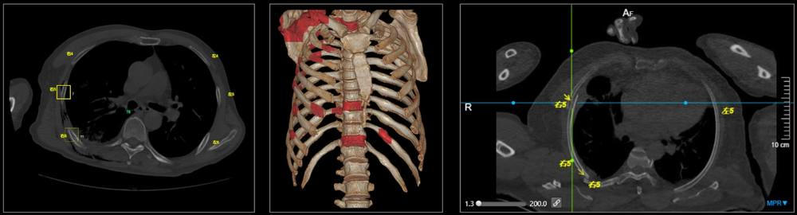
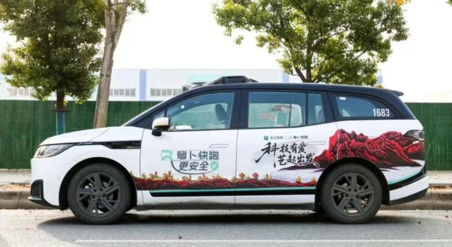

第 1 页 · 2 人工智能新应用
2 人工智能新应用

模块8：展望未来人工智能


第 2 页 · 幻灯片

第 3 页 · 一、工业制造新工厂
一、工业制造新工厂
核心理念：数字孪生 + AI闭环
虚拟空间构建物理工厂的数字镜像
AI模拟生产、优化流程、预测故障
形成虚拟仿真-现实执行-数据反馈的持续优化闭环
从大规模标准化生产转向柔性高效生产

梅钢的数字化平台中心
第 4 页 · 二、医疗健康新医生
二、医疗健康新医生
AI成为贯穿诊断、治疗、康复全流程的超级助手
罕见病诊断：同步分析症状、影像与基因数据
慢病管理：动态监测+AI预测血糖血压波动
智能手术：机器人辅助规划路径、避开血管神经
医疗普惠：让基层医院具备更专业诊断能力

CT骨折智能系统能全景智能展示病灶
第 5 页 · 三、无人零售新模式
三、无人零售新模式
从扫码支付演进为全流程智能
智能选品：分析社区消费数据精准选品
自主运营：机器人夜间补货、识别抓取商品
场景推荐：输入场景需求获取全套商品组合
供应链优化：预测需求、智能调货、动态定价
自动购物全景图
第 6 页 · 四、无人驾驶新技术
四、无人驾驶新技术
向全无人终极形态发展
多传感器融合：360度无死角环境感知
智能调度系统：实时分析数据、优化车辆调配
个性化服务：家庭/商务/老年模式自动切换
百度萝卜快跑：已在国内多城及欧洲商业运营

行驶中的萝卜快跑汽车
第 7 页 · 研讨无人驾驶新技术应用
研讨无人驾驶新技术应用

针对无人驾驶新技术，研讨其未来可能的商业模式，填写下表。
| 研讨维度 | 概要内容 |
| 商业逻辑 | |
| 商业模式可能类型 | |
| 关键要素或条件 | |
| 竞争壁垒或竞品 | |
| 经济效益或社会价值 | |
| …… |
第 8 页 · 学生分享及教师点评
学生分享及教师点评

| 评价要点 | 分值 | 计分 | 教师点评 |
| 1、商业逻辑是否清晰 | 15 | 逻辑清晰、认知到位 | |
| 2、商业模式类型是否具体和有创新性 | 25 | 非单一模式，有类别、场景、有用户群体 | |
| 3、关键要素或条件是否精准和契合 | 20 | 抓住成功的关键，判断精准 | |
| 4、竞争壁垒或竞品是否定位准确 | 15 | 对手是谁定位准、有详细的技术壁垒 | |
| 5、经济效益或社会价值是否合理 | 15 | 经济和社会效益可期 | |
| 6、其它（含逻辑、表情、主动、清晰、流畅、自信等） | 10 | 积极互动，表达流畅，自信开朗 |
第 9 页 · 子任务3：语音提示处理
子任务3：语音提示处理

拥抱智能科技
共赴全新未来